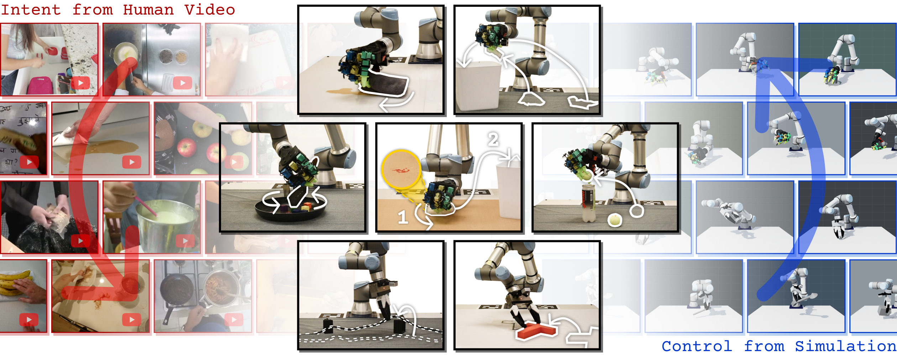

Embodiment-Agnostic Manipulation
LUCID: Learning Embodiment-Agnostic Intent Models from Unstructured Human Videos for Scalable Dexterous Robot Skill Acquisition
University of Illinois Urbana-Champaign
Carnegie Mellon University
†Corresponding author · *Equal advising

Hero video slot — drop
static/videos/teaser.mp4
We learn a manipulation intent model from human video and a tracking policy from simulation, and pair them in the real world on a dexterous hand and a parallel-jaw gripper.